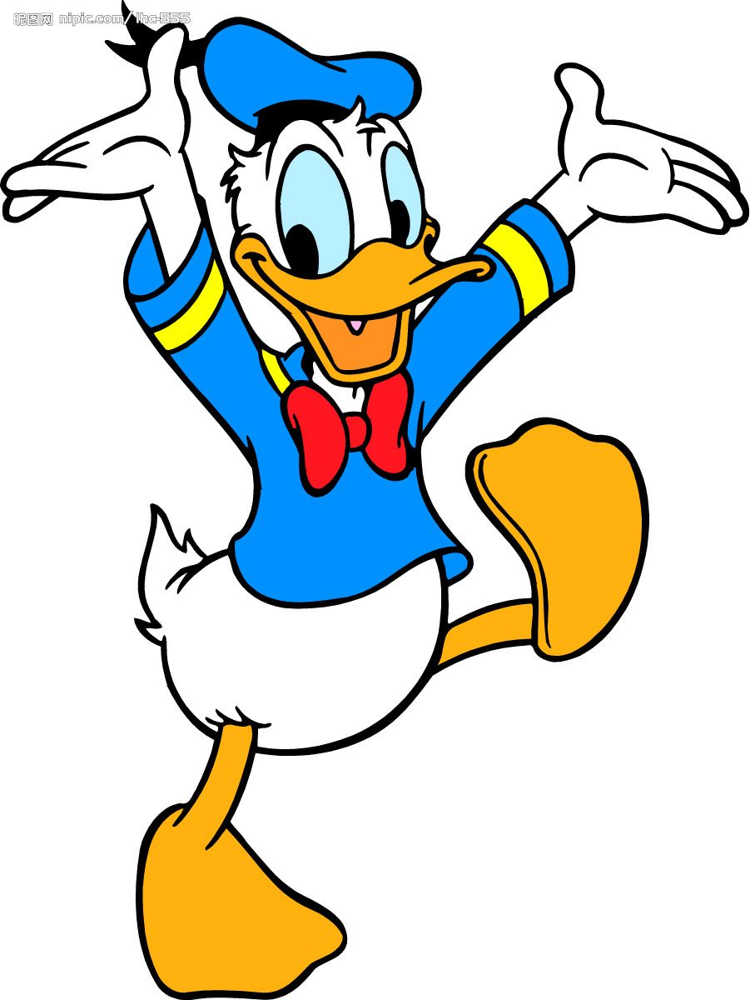

|  | 回到首页唐老鸭（Donald Duck）是迪士尼最著名的人物之一，和米老鼠并驾齐驱。他是一个热心肠，总是充满好意，但却总是非常急躁，爱发脾气（运气极差）。毒舌。他脾气火爆，好与人争执，喜欢夸大事实，经常抱怨生活中的小事和不如意的地方。而正是因为这种性格，注定了他的生活中各方面总是屡遭不顺。他是个失败者，却不是个懦夫，因为他总是在努力抗争。唐纳德和米奇是好朋友，他的女朋友是黛丝（Daisy Duck）。唐纳德有三个小甥子，辉儿（"Huey"Huebert Duck）、杜儿("Dewey"Deuteronomy D Duck)和路儿("Louie""Luey"Louis Duck)。他的车牌号是313。 |